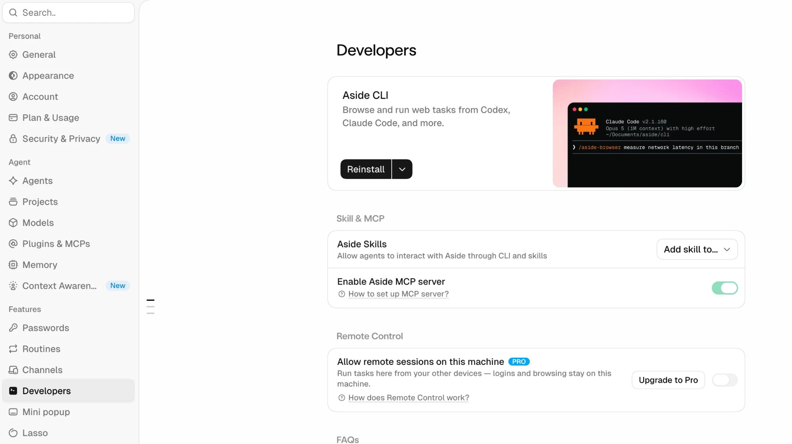

CLI는 Claude Code가 Aside를 부를 때 쓰는 “연결 통로”예요. 이게 없으면 Claude Code는 Aside가 설치된 줄도 몰라요. 글은 써도 올리지 못해요.
맨 위 메뉴에서 Aside → 설정을 눌러요.
왼쪽 목록 맨 아래쪽 Developers를 눌러요.
맨 위 Aside CLI 상자에서 검은색 Install 버튼을 눌러요. (사진처럼 Reinstall로 바뀌면 설치된 거예요)
바로 아래 Enable Aside MCP server 스위치가 초록색(켜짐)인지 확인해요.

설정 → Developers → Aside CLI Install · MCP server 켜짐
이제 Claude Code로 돌아와서 아래 문장을 그대로 붙여넣어요.
Claude Code가 “설치되어 있어요”라고 답하면 Aside 설치 끝이에요. “없어요”라고 하면 위 3번 Install 버튼을 다시 누르고, Claude Code를 껐다 켠 뒤 한 번 더 물어보세요.
✅ 여기까지 해야 Aside 설치 완료예요. Aside 앱만 깔고 CLI를 안 깔면, 4번 “이어 주기”에서 Claude Code가 Aside를 못 찾아요.
계정 3개에 한 번씩 로그인하기
Aside 브라우저로 네이버, 인스타그램, 스레드에 한 번씩 로그인해요. 네이버는 “로그인 상태 유지”를 체크하세요. (로그인이 안 돼 있으면 AI가 글쓰기 화면에서 멈춰요)
비밀번호는 Aside 비밀번호 관리자에 저장하세요. AI는 비밀번호를 보지 못하고, 자동입력으로만 로그인해요.
채팅창에 비밀번호를 직접 적지 마세요.
💡 알아두세요
· 로그인은 꼭 Aside 안에서 해요. 크롬에 로그인돼 있어도 Aside는 그걸 못 써요.
· 글을 올리는 동안 컴퓨터와 Aside는 켜 두세요.
3 원장 스킬 팩 (Claude에게 맡기기)
유료판의 핵심 — 네이버 블로그 글쓰기·마케팅 카피·랜딩페이지·기획·팀 자동화까지, 원장이 실제로 쓰는 스킬 3종이에요.
Claude Code를 열고, 아래 문장을 그대로 복사해서 붙여넣으세요. Claude가 스킬을 받아서 세팅까지 알아서 해줘요. 원장님이 칠 명령어는 없어요.
🔒 비밀번호 입력 후 여기에 표시됩니다
📌 세팅이 끝나면, 앞으로 “블로그 글 써줘” 같은 요청에 이 스킬들이 자동으로 적용돼요 (예: naver-blog-writing 스킬 발동). 따로 켤 필요 없어요.
4 Claude Code와 Aside 이어 주기
2번 ③에서 깐 CLI를 Claude Code가 실제로 쓰도록 이어 주는 단계예요. 아래 문장을 Claude Code에 붙여넣으세요.
중간에 “설치해도 될까요?”, “실행해도 될까요?” 하고 물으면 허용을 눌러요. 한 번만 하면 돼요. 원장님이 직접 칠 명령어는 없어요.
5 프롬프트 붙여넣고 첫 글 올리기
아래 상자를 눌러 복사하고 Claude Code에 붙여넣으세요. [내 정보] 칸만 원장님 것으로 채우면 돼요.
첫 글은 비공개로 테스트
처음엔 공개범위를 비공개로 두고 한 번 끝까지 해보세요.
글자 크기, 줄바꿈, 사진이 괜찮은지 직접 확인해요.
괜찮으면 [내 정보]의 공개범위를 전체공개로 바꿔요.
💡 글 1개가 올라가는 데 8분에서 20분쯤 걸려요. 그동안 Claude Code와 Aside 창은 닫지 말고 켜 두세요.
6 텔레그램 봇 만들기 (선택 · 휴대폰에서 3분)
글이 올라갈 때마다 블로그 링크 + 카드뉴스 사진 + 인스타·스레드 문구를 텔레그램으로 받아 보는 기능이에요. 인스타 계정을 자동화에 연결하는 게 불안한 원장님은 올리는 건 직접 하고, 만드는 것만 맡기는 방식으로도 쓸 수 있어요. 안 쓰실 거면 6~8번은 건너뛰어도 돼요.
휴대폰에 텔레그램 앱을 설치하고 가입해요.
검색창에 BotFather를 치고, 파란 인증 체크가 붙은 공식 계정을 열어요.
대화창에 /newbot 이라고 보내요.
봇 이름을 물어보면 아무거나 적어요. (예: 우리샵 카드뉴스)
봇 아이디를 물어보면 영문으로, 끝은 꼭 bot으로 끝나게 적어요. (예: ourshop_cardnews_bot) 이미 있는 아이디라고 하면 뒤에 숫자를 붙여요.
BotFather가 긴 글자 한 줄(토큰)을 보내줘요. 그걸 길게 눌러 복사해 두세요.
마지막으로, 방금 만든 내 봇을 검색해서 열고 “안녕”이라고 한 번 보내요. (이걸 해야 Claude가 원장님 방을 찾을 수 있어요)
토큰은 내 봇의 비밀번호예요. 카톡방·화면공유에 올리지 마세요. 다음 7번에서 Claude Code에만 붙여넣어요.
7 Claude Code에 텔레그램 연결 문장 붙여넣기
아래 상자를 복사해서 Claude Code에 붙여넣고, [토큰] 자리만 6번에서 복사한 토큰으로 바꾸세요. 챗 아이디 찾기, 설정 파일 저장, 테스트 전송은 전부 Claude가 해요.
휴대폰 텔레그램에 “연결 완료”가 오면 끝이에요. 안 오면 6번 7단계(내 봇에게 “안녕” 보내기)를 했는지 확인하고 “텔레그램 다시 연결해줘”라고 말하세요.
인스타·스레드는 내가 직접 올리고 싶다면 (방법 B)
인스타 계정을 자동화에 연결하지 않는 방식이에요. 아래 한 줄을 추가로 붙여넣으세요.
8 텔레그램으로 받아서 확인하고 올리기
이제부터는 설정할 게 없어요. 글이 올라가면 텔레그램에 아래 네 가지가 도착해요.
블로그 글 링크 → 눌러서 글자 크기·사진이 괜찮은지 확인
카드뉴스 사진 (보통 5~7장) → 사진을 길게 눌러 저장
인스타 캡션 → 길게 눌러 복사 → 인스타 새 게시물에 저장한 사진 순서대로 올리고 붙여넣기
스레드 문구 → 그대로 복사해서 스레드에 붙여넣기 (반말체로 이미 다듬어져 있어요)
💡 Aside가 인스타·스레드까지 자동으로 올리는 원장님은 텔레그램을 “잘 올라갔나” 알림용으로만 쓰면 돼요. 방법 B를 고른 원장님은 올리기 전에 한 번 훑어보는 이 여유가 장점이에요.
포함된 스킬 3종
원장이 실제로 매일 쓰는 것만 남겼어요. 각 스킬은 특정 요청에 자동으로 발동합니다. 따로 켤 필요 없어요.
⭐ 블로그·마케팅 핵심
naver-blog-writing 핵심
네이버 블로그 전용 프레임워크. PREP 구조, 업종별 반박제거, CTA 3공식, 상위노출 8원칙, 가독성 10원칙. “블로그 글 써줘/상위노출 되게” 하면 자동 발동.
marketing-science-writing 핵심
행동경제학·소비자 심리 기반 설득 카피. 카드뉴스·인스타/스레드 캡션·유튜브 스크립트·세일즈 카피·후크·CTA. “더 설득력 있게” 하면 자동 발동.
homepage-builder-kr 핵심
우리 샵 랜딩페이지·홈페이지를 기획 인터뷰부터 배포까지 한 흐름으로 제작. “홈페이지 만들어줘” 하면 자동 발동.
💡 Aside 브라우저 연결 스킬(aside-browser)은 이 팩이 아니라 4번 “Claude Code와 Aside 이어 주기”에서 따로 설치돼요.
자주 묻는 질문
1기 원장님들이 실제로 많이 물어본 것들이에요. 탭을 눌러 골라 보세요.
채팅창에 물어봤는데 아무것도 안 만들어줘요.일반 채팅은 답만 해요. 실제로 뭔가 만들려면 Claude 앱 오른쪽 위 </> 아이콘을 눌러 Claude Code 창에서 해야 해요.
GitHub 로그인이랑 Claude 로그인이 다른가요?네, 서로 다른 계정이에요. GitHub 비밀번호를 만든 적이 없으면 GitHub에서 새로 가입하면 돼요.
윈도우인데 x64 / ARM64 중 뭘 받아요?거의 다 x64예요. 헷갈리면 x64로 받으세요.
검은 창(터미널)이 갑자기 떴어요. 켜 놔야 하나요?아니요, X로 닫아도 돼요. 이 가이드에서는 터미널을 쓰지 않아요. 전부 Claude Code에 말로 하면 돼요.
설치가 너무 오래 걸려요 / 멈춘 것 같아요.오래된 노트북은 10분 넘게 걸리기도 해요. 진행바가 움직이면 기다리고, 완전히 멈춘 것 같으면 화면을 캡처해서 Claude Code에 붙여넣고 물어보세요.
휴대폰으로 해도 되나요?설치와 세팅은 꼭 노트북·PC에서 해야 해요. 휴대폰은 텔레그램 확인용으로만 써요.
카드뉴스 이미지를 못 만들어요.Node.js가 없어서 그래요. 1번 ③의 문장을 다시 붙여넣으면 Claude가 확인하고 설치해요.
계획 모드는 언제 써요?뭔가 새로 만들 때는 계획 모드로 먼저 시작해요. 끝에 “네가 내 말을 잘 이해했는지 설명해줘”를 붙이면 Claude가 계획을 먼저 보여줘요. 맞으면 그때 실행으로 넘어가요. 토큰 낭비가 줄어요.
노력(사고력) 낮음·중간·높음은 뭘 골라요?계획 짤 때는 높음, 이미 정해진 걸 실행만 할 때는 낮음이에요. 이 가이드의 5번 프롬프트처럼 다 적어 준 건 낮음으로 시작해도 돼요.
뭘 골라야 할지 모르는 선택지가 떠요.권장(추천)이라고 적힌 걸 그대로 고르면 돼요. 이해하고 싶으면 “이해하기 쉽게 설명해줘”라고 하세요.
영어로 답하거나 너무 어렵게 말해요.“한국어로, 코딩 지식이 전혀 없으니 초등학생도 이해하게 설명해줘”라고 하면 바로 바뀌어요.
“허용할까요?” 창이 자꾸 떠요.항상 허용이 있으면 그걸, 없으면 한 번만 허용을 누르면 돼요.
토큰(사용량)을 다 썼대요.Pro 구독에 포함된 한도예요. 약 5시간 뒤 자동으로 다시 채워지니 잠시 쉬었다가 하세요. API 키나 토큰을 따로 발급받을 필요는 없어요.
스킬이 발동 안 해요.Claude Code에 “원장 스킬 팩이 설치돼 있는지 확인해줘”라고 물어보세요. 없다고 하면 3번 문장을 다시 붙여넣어요.
Claude Code가 Aside를 못 찾아요.2번 ③ Aside CLI가 설치됐는지(설정 → Developers에 “Reinstall”이 보이는지) 확인하고, 4번 연결 문장을 다시 붙여넣으세요. Aside 브라우저가 켜져 있어야 해요.
Aside가 “원고 파일을 읽을 수 없어요”라고 해요.Claude Code에 “Aside를 전체 접근 권한으로 다시 실행해줘”라고 말하세요.
Aside가 로그인 화면에서 멈췄어요.Aside 브라우저에서 그 사이트에 직접 한 번 로그인하고 “로그인했어”라고 말하면 이어서 해요. 네이버는 “로그인 상태 유지”를 꼭 체크하세요. 크롬에 로그인돼 있어도 Aside는 그걸 못 써요.
Aside 설정 메뉴 이름이 가이드 사진과 달라요.업데이트로 조금씩 바뀌어요. Aside 채팅창에 “Claude 구독 연결하는 법 알려줘”처럼 물어보면 돼요.
글 올리는 중에 컴퓨터를 꺼도 되나요?안 돼요. 끝날 때까지 Claude Code와 Aside 창을 켜 두세요. 글 1개에 8~25분쯤 걸려요.
발행 순서가 어떻게 되나요?① 네이버 블로그 발행 → ② 그 글로 인스타 카드뉴스·스레드 문구 만들기 → ③ 인스타·스레드 발행. 인스타·스레드 글 끝에는 블로그 링크가 들어가서 블로그로 유입돼요.
AI가 글을 안 써요.Claude 앱에 Pro 계정으로 로그인돼 있는지 확인하세요. API 키는 넣지 마세요.
글자 크기나 줄바꿈이 이상해요.“본문 전체 15pt로 맞춰줘”, “한 문장 한 줄로 다시 나눠줘”라고 말하면 바로 고쳐줘요.
첫 글은 왜 비공개로 올려요?글자 크기·사진·줄바꿈을 내 눈으로 한 번 확인하려고요. 괜찮으면 5번 [내 정보]의 공개범위를 전체공개로 바꾸면 돼요.
임시저장 글이 생겼어요.중간에 다시 쓴 흔적이에요. 블로그 임시저장함에서 지우면 돼요.
텔레그램으로 메시지가 안 와요.제일 흔한 원인은 내 봇에게 “안녕”을 먼저 안 보낸 것이에요. 봇은 먼저 말을 못 걸어요. 보낸 다음 Claude Code에 “텔레그램 다시 연결해줘”라고 하세요.
토큰을 어디 뒀는지 잊어버렸어요.BotFather 대화창에 /mybots → 내 봇 선택 → API Token을 누르면 다시 볼 수 있어요.
토큰이 카톡방에 노출됐어요.BotFather에 /revoke를 보내면 새 토큰이 나와요. 새 토큰으로 7번을 다시 하세요.
봇 이름을 잘못 지었어요.BotFather에 /setname으로 이름만 바꿀 수 있어요. 다시 만들 필요 없어요.
이 방법은 인스타 계정이 안전한가요?텔레그램 봇은 인스타와 아무 관련이 없어요. 방법 B를 고르면 인스타 계정 정보는 어디에도 들어가지 않고, 올리는 건 늘 원장님이 인스타 앱에서 직접 해요.
“안돼요”라고만 하면 Claude가 못 고쳐요.언제 · 뭘 눌렀을 때 · 어떤 화면이 나왔는지를 같이 말해 주세요. 예: “로그인 창은 떴는데 아이디를 치려는 순간 창이 꺼져요.”
말로 설명하기 애매해요.화면을 캡처해서 Claude Code 입력창에 붙여넣기(Cmd+V / Ctrl+V)하면 사진이 같이 들어가요. 이게 제일 빨라요.
같은 오류가 계속 반복돼요.“지금까지 시도한 걸 정리하고, 다른 방법으로 다시 해봐”라고 하세요. 그래도 안 되면 캡처와 함께 챌린지 카톡방에 올려 주세요. 라이브 때 같이 풀어요.
이 페이지를 다른 사람과 공유해도 되나요?안 돼요. 2기 결제하신 원장님 전용이에요. 링크와 비밀번호는 공유하지 말아 주세요.
막히는 부분은 10월 ai자동화 챌린지 카톡방에 바로 올려 주세요. 라이브 때 같이 풀어 드립니다.